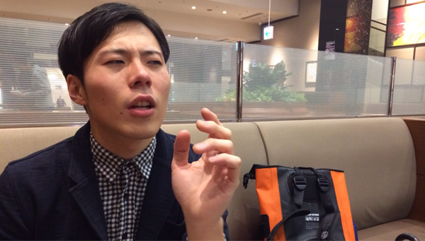

さわいかん(以下:さわい)：今回は、"akstnhmyrw(あかさたなはまやらわ)"MV監督の堀J君です。よろしくお願いします。
堀J：こちらこそよろしくお願いします。
さわい：いきなりなんだけど、堀Jは19歳という若さで映像を撮る仕事をよくしてると思うんだけども、どうして映像に携わるようになったの？
堀J：実は小学校の頃は空手をやってまして、中学になるまで映像に触れることはありませんでした。小学生時代は、テレビもあまり見ず、パソコンもまったく触らずという生活を送ってました。
転勤族ということもあり、小学校は全国各地を点々と周り、中学から東京に来ました。
中学生のとき、放送部に入ったことがきっかけで、初めて映像を扱い、映像作品を作るようになりました。
ただその頃は、映像編集ソフトというものがそれほど普及していなかったものですから、パソコンでの編集ではなくて、リニア編集といって、テープを使って再生機や録画器を駆使しながら番組のようなものを作ってました。スタートとストップの繰り返しみたいな感じです(笑)
さわい：完全にアナログな方法で映像を作ってたのね！すごいなぁ。で、そこから高校に進んでもずっと映像作りを続けてっていう感じ？
堀J：そうですね。法政二高に進学し、放送部に入りました。再生機や録画器がなかったので、このタイミングでパソコンを使って映像を編集し始めました。
さわい：すごくテクニカルな話題で、個人的にめちゃくちゃ楽しいです(笑)
で、今回おれが堀JにMV製作をお願いしたきっかけが、法政二高時代に堀Jが作ったヒトラーをモチーフにした作品だったんだよね。「めちゃくちゃおもしろい」っ て思ったの。テーマと映像のバランス感がとても良くてニヤニヤしちゃって、それから堀Jに即決したんですよ。(笑)
(作品リンク)
堀J：ありがとうございます。ただあれは、卒業制作のような体で作ったものでして、放送部はとっても真面目でした。それこそNHK杯に出すような、「おりこうちゃん番組」のような堅いものしか作れなかったんです。そこで、卒業するのだからはっちゃけた、、というか、反社会的なモノを作りたいなと思って、ヒトラー総統をモチーフにした映像を作りました。撮影現場ではみんな本気でやってました。
さわい：今回MVの製作をお願いして、めちゃくちゃ素晴らしい作品を作ってくれたんだけど、MVの製作は初めてなんだっけ？
堀J：そうなんですよ。はじめにお話を頂いた時、「無理だろうな」と思いまして、途中で音信不通になってしまおうと本気で思ってました。
さわい：えっ！(笑)、でもほんとにめちゃくちゃ良い作品だよ！
堀J：ありがとうございます。
さわい：ぼくらderonderonderonの印象ってどんな感じだったの？
堀J：初めてderonderonderonという名前を聞いて、youtubeにあがっていたMVを見まして、ギンギラギンの衣装を着たヤバい人達だな、と。ただ普段、大学で生活をしている中ではそういう方達とは巡り会う事のない、異世界の人達だとも感じました。
その後、ホームページを拝見させていただいたり、活動を見聞きしていた中で、とても特殊なチームで動いているバンドなんだなと思いましたね。
さわい：そう思ってくれてるのは嬉しい限りです！今回、アルバムの曲を全曲MV化するのも、おれらなりのやり方と姿勢を提示していきたいなと思ったのがきっかけでもあるしね。

さわい：では次に、"akstnhmyrw"に焦点を当てて話を聞きたいと思います。"akstnhmyrw"を聴いてどう思った？
堀J：はい。最初、"akstnhmyrw"の歌詞を見たときに「ひらがなばっかでこれはなんなんだ」と思ってました。(笑) ただ、よく読んでいけば、”１人から１人に対するメッセージ"のようにも聞こえますし、”１人から世代に対するメッセージ"のようにも見えました。おそらく、これは聴いてる人によって解釈は様々だとは思いますが、対象としての小さいまとまりから大きいまとまりまで色んな意味を感じられます。自分は大きい解釈の方が印象が強いです。
特に、サビの歌詞は最初は１人へ、最後の方は全体へ訴えかけている風に感じました。
さわい：うん。この曲はわかりにくいかもしれないけど、Aメロの頭文字を取っていくと「あかさたなはまやらわ」ってなってて。そういう遊び方をしつつ、サウンド面ではキラキラしつつも、サビはストレートな詩でドキっとさせたいっていう狙いもあったり…(笑) あと、Cメロのひたすら「あいうえおかきくけこさしすせそ～」って叫ぶところは、単純に楽しいと思うんだよね(笑)
堀J：そうですね、普通じゃないですよね。あいうえおかきくけこさしすせそってただひたすらに叫ぶのって。
さわい：普通じゃないよね。で、このMVは埼玉県の深谷で撮影し。謎の書道家"杉山泉"さんに出演していただいて、さらにめちゃくちゃいっぱい文字を書いていただいきましたよね。撮影に関しては何か堀Jとしてのこだわりとかはあったの？
堀J：泉さんには本当にお世話になりましたよね。大変ありがたかったです。撮影に関しては、昨今の一眼ブームには目もくれず、私はビデオカメラで撮影をしました。一眼は一眼で良い部分があるのですが、映像本来の色表現であるとか、ビデオカメラはありのままの絵を撮ることができるんです。
さわい：めちゃくちゃキレイな映像だったよね。空の青さもすごい。
堀J：でも、撮影は不安でしたね。MVなんて初めてでしたし、ビデオカメラで撮影してる人も最近は少なくなって来てると思うので、その絵が音楽とどのように絡むのかという不安もありました。「きちんと形になるのかな？」という感じでした。ただ、初めてなら初めてなりに、自分の作品であるということを意識して製作しました。あとは、見てて飽きないようにも頑張りましたね。
さわい：スローモーションの映像を入れたんだって思ったもん(笑) これからもマジでよろしくお願いします！
堀J：こちらこそ、よろしくおねがいします。
さわい：最後に何か言い残したことは無いですか？
堀J：私はderonderonderonにはB'zみたいになって欲しいです。AKB48みたいにはなって欲しくないです。
さわい：わっ！なんか嬉しい！(笑) つまり、本物のエンターテイメント集団になって欲しいってことかな？
堀J：そうですね。やっぱりB'zですかね。僕らの世代のB'zになってください！
さわい：ありがとうございます！がんばります！
堀J
映像作家
プロフィール
平成7年2月20日生まれ。現在19歳。高校の時にNHK杯全国高校放送コンテストにて5位入賞。テレビドキュメンタリー部門にて横浜放送局長賞受賞。古今東西の大会に点々と出没している。